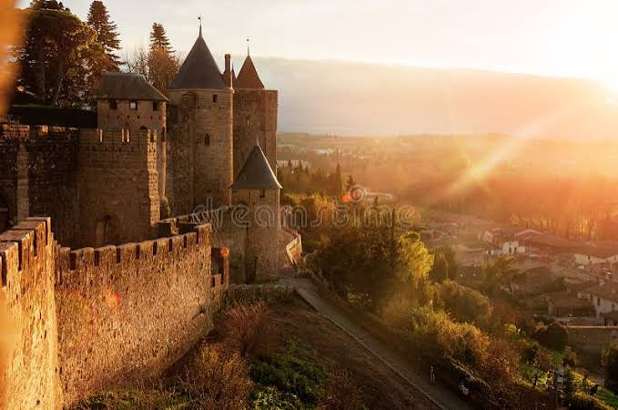

Cité de
Carcassonne


⟹ Monuments & Patrimoine ⟸
Occupée depuis le VIe siècle avant notre ère, fortifiée dès l'époque romaine puis remaniée par les Wisigoths et les comtes de Trencavel, la colline de Carcassonne domine la plaine de l'Aude depuis plus de deux millénaires. Au XIIIe siècle, à la suite de la croisade contre les Cathares, le pouvoir royal dote la ville d'une seconde ligne de remparts et agrandit considérablement le château comtal.

Avec la paix des Pyrénées en 1659 et l'évolution des techniques de guerre, la Cité perd son rôle défensif et tombe en délabrement, au point qu'un décret autorise au XIXe siècle la destruction de ses remparts pour en récupérer les pierres. Sa sauvegarde est due à l'historien local Jean-Pierre Cros-Mayrevieille, qui obtient l'annulation du décret, puis à l'architecte Eugène Viollet-le-Duc, chargé en 1853 d'une restauration qui se poursuivra, après sa mort en 1879, jusqu'en 1910 sous la direction de ses élèves.
Aujourd'hui, la Cité déploie près de 3 kilomètres de remparts, une double enceinte séparée par des lices herbeuses, 52 tours et barbacanes, ainsi que le château comtal et la basilique gothique Saint-Nazaire. Inscrite au patrimoine mondial de l'UNESCO en 1997, elle constitue la plus grande forteresse médiévale d'Europe encore conservée.
C'est au coucher du soleil que la Cité révèle peut-être le mieux son caractère de citadelle de légende : la pierre dorée des remparts s'embrase, les tours se découpent sur le ciel et la silhouette entière semble surgir, comme au premier regard, au-dessus de la plaine de l'Aude.
Le site de Carcassonne est occupé dès l’âge du Fer. Une enceinte du Bas-Empire romain a servi de base à une partie de l’enceinte médiévale. Après la croisade contre les Albigeois et le rattachement au domaine royal, les défenses sont profondément renforcées aux XIIIe et XIVe siècles.
Le classement de l’enceinte au titre des monuments historiques intervient dès 1840. À partir de 1853, Eugène Viollet-le-Duc dirige une restauration de grande ampleur. L’UNESCO souligne que cette campagne du XIXe siècle a eu une influence importante sur l’évolution des principes et pratiques de conservation du patrimoine.
La Ville fortifiée historique de Carcassonne est inscrite sur la Liste du patrimoine mondial depuis 1997, selon les critères (ii) et (iv). Le bien inscrit couvre 11 hectares et bénéficie d’une vaste zone tampon destinée à préserver ses perspectives et son environnement paysager.
La visite permet de distinguer plusieurs strates : maçonneries antiques, dispositifs médiévaux, château comtal, lices entre les deux enceintes et restaurations du XIXe siècle. Depuis les remparts, le panorama ouvre sur la Montagne Noire, les Pyrénées et la ville basse.
Bastide Saint-Louis : ville basse médiévale aux rues tracées au cordeau
Canal du Midi : port et chemin de halage traversant la ville, inscrit lui aussi à l'UNESCO
Château de Lastours : quatre châteaux cathares perchés, à une demi-heure de route
Abbaye de Fontfroide : abbaye cistercienne au cœur des vignes, non loin de Narbonne